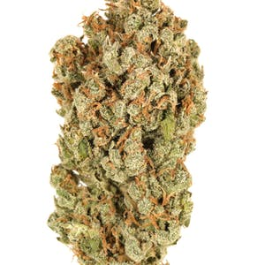
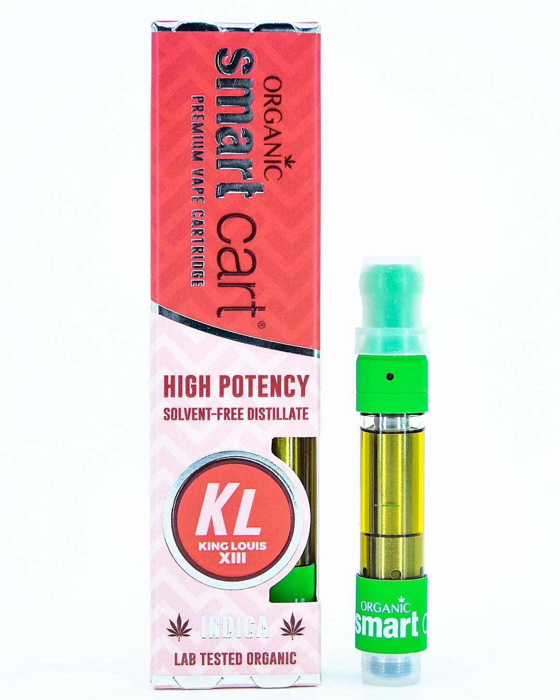
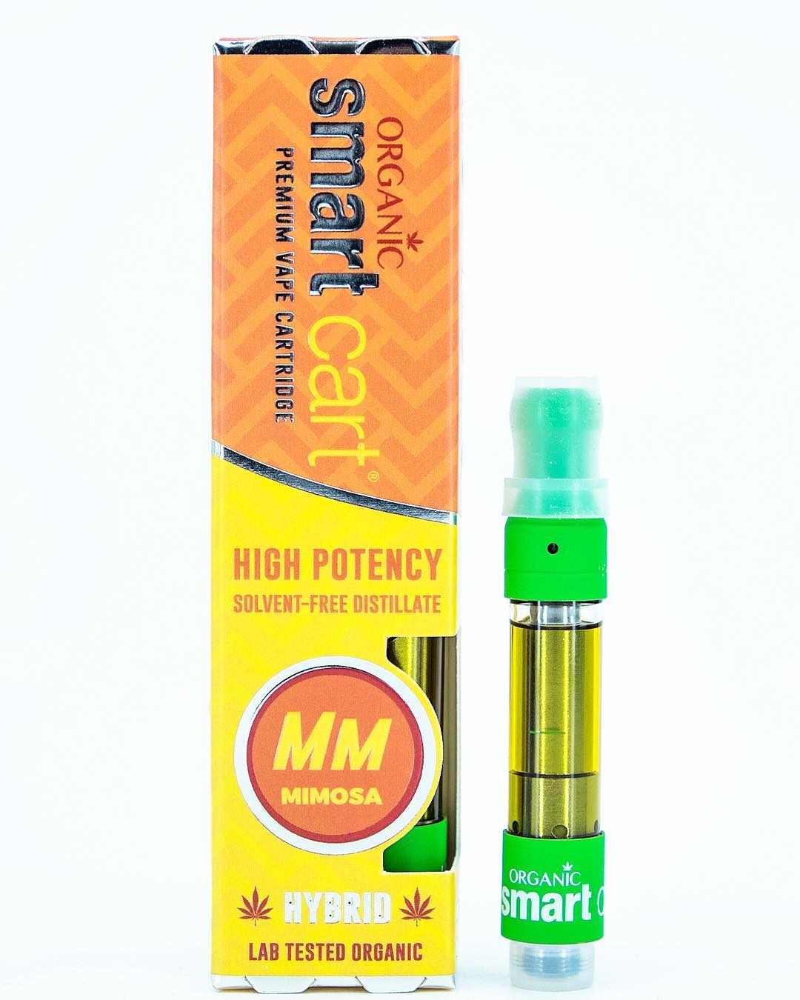
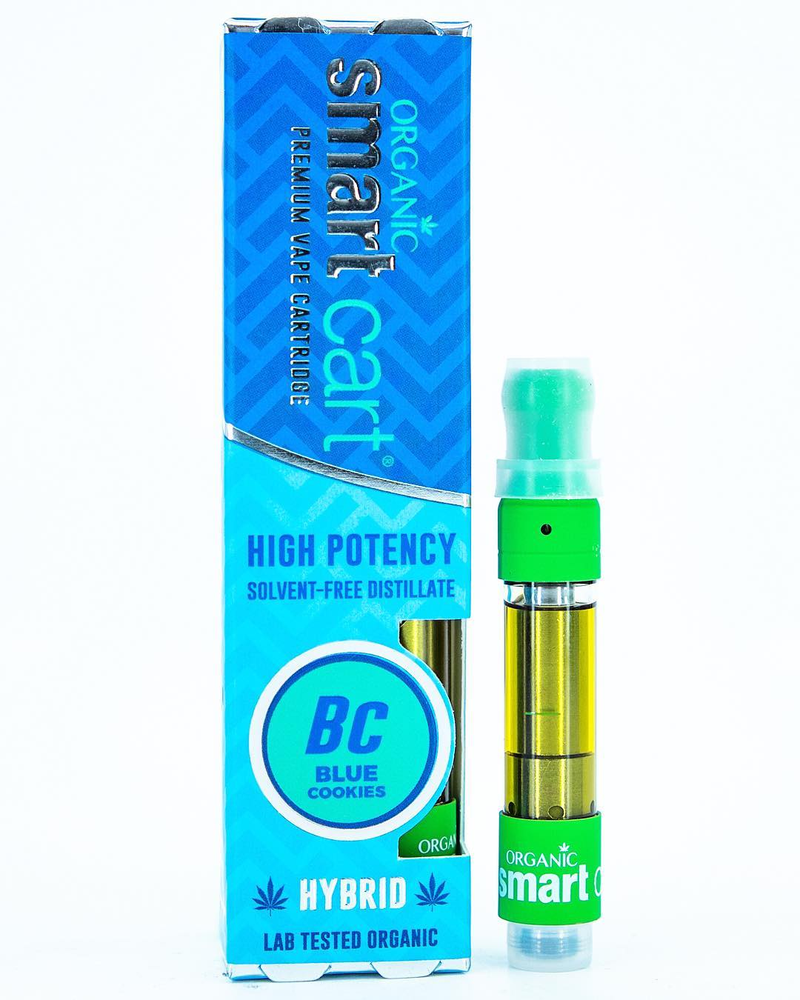
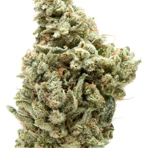
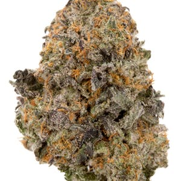
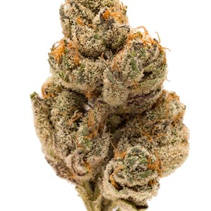

Home
The Green Supply Co.
Serving only the
BEST
!
Welcome stranger!
Take a look around, we just opened.
Top Picks
Based on Flavor and High
NEW!
Weed - Durban Poison (SATIVA)

According to cultivation legend, Rosenthal was in South Africa in search of new genetics and ran across a fast flowering strain in the port city of Durban. After arriving home in the U.S., Rosenthal conducted his own selective breeding process on his recently imported seeds, then begin sharing. Rosenthal gave Mel Frank some of his new South African seeds, and the rest was cannabis history.
Order
NEW!
Smart Cart - King Louis (INDICA)

This strain announces itself as many people did in the 1600s: by its smell. The difference is this monarch’s odor is one that’s meant to be enjoyed; its dense nugs have an overwhelmingly piney smell with an earthy musk that will have you thinking of your last forest adventure. Bred in part from OG Kush, Louis XIII has a very similar spicy kush aroma.
Order
Smart Cart - Mimosa (HYBRID)

A sativa dominant hybrid strain that truly packs a punch, Mimosa is a brand new, up and coming creation from Symbiotic Genetics which has begun spreading like wildfire among the marijuana community for its vibrant, frosty appearance, fruity yet zesty aroma, and incredibly energizing/uplifting effects.
Order
Carti's
Stealth, at it's finest
Smart Cart - Blue Cookies (HYBRID)

Blue Cookies is an indica-dominant hybrid cross between two celebrity strains, Girl Scout Cookies and Blueberry. As the child of these heavyweight champion strains, Blue Cookies delivers a crushing blow of euphoria straight to the head, where it swiftly sinks down to relax the entire body.
Order
Smart Cart - Mimosa (HYBRID)
A sativa dominant hybrid strain that truly packs a punch, Mimosa is a brand new, up and coming creation from Symbiotic Genetics which has begun spreading like wildfire among the marijuana community for its vibrant, frosty appearance, fruity yet zesty aroma, and incredibly energizing/uplifting effects.
Order
NEW!
Smart Cart - King Louis (INDICA)
This strain announces itself as many people did in the 1600s: by its smell. The difference is this monarch’s odor is one that’s meant to be enjoyed; its dense nugs have an overwhelmingly piney smell with an earthy musk that will have you thinking of your last forest adventure. Bred in part from OG Kush, Louis XIII has a very similar spicy kush aroma.
Order
Straight Bud
You can't beat old school
Weed - Gorilla Glue #4 (HYBRID)

Formerly known as Gorilla Glue or Original Glue, GG4’s story began with breeder Joesy Whales. After founding Nevada’s GG Strains, Whales accidentally created GC4 after a crop of Chem Sister (a popular phenotype of Chemdawg) plants produced hermaphrodites that pollinated some of his Sour Dubb females.
Order
Weed - Gelato (HYBRID)

Gelato is a cross between Sunset Sherbet and Thin Mint Girl Scout Cookies. Also known as Larry Bird, Gelato (#33) was first cultivated in Northern California's Bay Area and is derived from a deep bank of genetics created by the Cookie Family. Gelato’s name pays homage to its sweet aroma.
Order
Weed - Dosidos (HYBRID)

Do-Si-Dos is a hybrid of OG Kush Breath — a phenotype of Girl Scout Cookies — and Faceoff OG from Oregon’s Archive Seed Bank.
Order
NEW!
Weed - Durban Poison (SATIVA)
According to cultivation legend, Rosenthal was in South Africa in search of new genetics and ran across a fast flowering strain in the port city of Durban. After arriving home in the U.S., Rosenthal conducted his own selective breeding process on his recently imported seeds, then begin sharing. Rosenthal gave Mel Frank some of his new South African seeds, and the rest was cannabis history.
Order